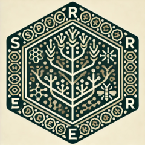

Export Species Richness to Cloud-Optimized GeoTIFF
Source:R/export_richness.R
export_richness.RdThis function takes a data.table of species richness results and a path to a raster template.
It generates a SpatRaster object using the terra package, populates it with the species richness values,
and writes the result out as a Cloud-Optimized GeoTIFF.
Arguments
- Results
A data.table containing species richness results. This data.table must contain at least the columns
cellandSR, wherecellrefers to the cell index in the raster andSRrefers to the species richness value.- path
A character string specifying the file path to a raster template. This raster is used as a template for the output raster.